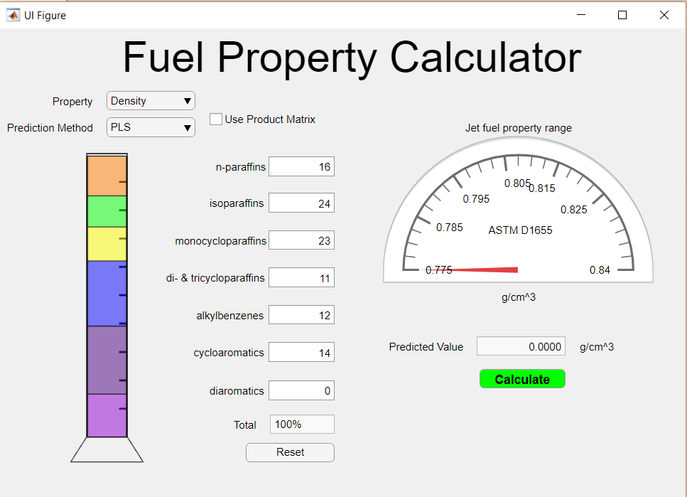

Projects
A collection of projects showcasing my experiences in performing data analytics and statistical analysis in the laboratories I had the opportunity to work in.
Neuropixels

From 2017 to 2020, I have been working extensively on the Neuropixels project at the Purdue Medicinal Chemistry and Molecular Pharmacology department. This technology is a silicon probe capable of recording large swaths of a mouse's brain. Recording of brain activity is done through implantation of the probe into the brain through surgery and interfacing with electrophysiology recording software. This techology allows laboratories such as the one I worked for to record hundreds of neurons and their physiological properties

Currently most figures are unable to be shown as the publication is not yet ready for submission. However, my roles in data analysis involve writing custom Python programs for the following uses: principle component analysis, spike-train visulization, and waveform characterization.
Hydrocarbon Fuels

Through the NEPTUNE program, a program for US Armed Forces veterans and service members interested in STEM research, I was able to work with Dr. Gozdem Kilaz as a data analyst and statistician. My work primarily revolved around the use of machine learning algorithms to detect patterns in hydrocarbon mixtures that could accurately predict the various properties of interest for jet fuels (density, freezing point, heat of combustion, etc.).
This research culminated in a publication in Fuel, a prestigious publisher specializing in fuel research. My primary contribution to this publication was the implementation of the Partial Least Squares (PLS) and Support Vector Machines (SVM) algorithms (pg 1054-1055) in the prediction of fuel density. SVM was capable of having a 0.09% error to the true density, most notably
Furthermore, with my research in other machine learning algorithms, an application (left) was developed which could calculate density, heat of combustion, freezing point, and viscosity with less than a 1% degree of inaccuracy utilizing a variety of machine learning algorithms. Of which, the most novel was the implementation of a ten layer neural network to determine many of these properites to less than a 0.5% inaccuracy rate.